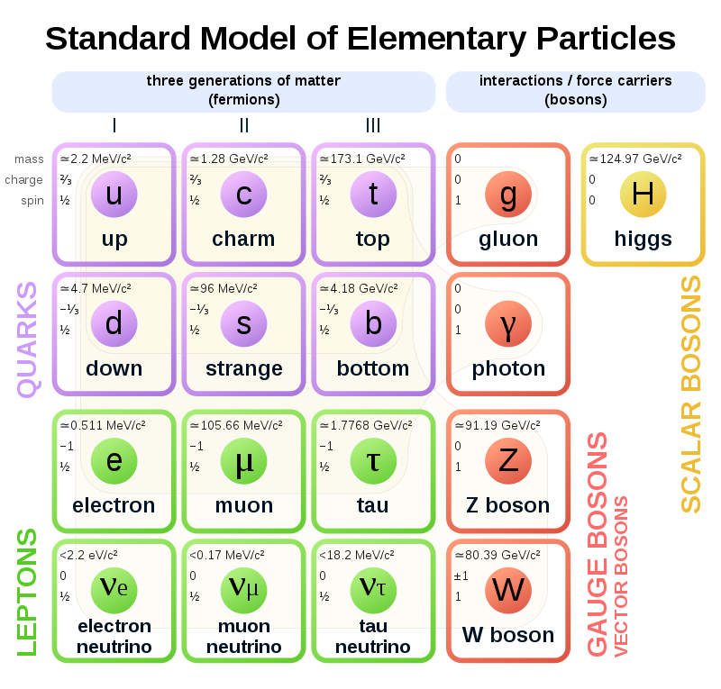

Centro San Domenico
Piazza San Domenico 12
40124 BOLOGNA
tel. 051 581718
http://www.csdricerca.com/
Bologna, 10 aprile 2019
Agli amici degli
Incontri Interdisciplinari
Carissimi,
ci rivedremo lunedì 29 aprile, alle ore 21, presso il Convento San Domenico, che ci ospiterà nella sua “sala del fuoco”, cui si accede da Via San Domenico 1.
Animerà ancora la serata il prof. Jaime Julve, che ci aiuterà a proseguire le riflessioni sui rapporti tra fisica e filosofia, iniziate la volta scorsa con lo stimolo del libro di Giuseppe Gembillo “Werner Heisenberg – la filosofia di un fisico”.
Nell’avvicinarsi della Pasqua, pensando al mistero di Dio che si fa uomo e arriva a lasciarsi condannare e crocifiggere per riconquistare il cuore della sua creatura, la nostra ricerca del senso della nostra esistenza possa trovare luce e pace.
Un cordiale saluto in attesa di rivederci
fra Giovanni Bertuzzi O.P. fra Sergio Parenti O.P.
Breve resoconto dell’Incontro Interdisciplinare del 29 aprile 2019
a cura di fra Sergio Parenti O.P.
JULVE – C’erano alcuni punti che erano rimasti da discutere. Le scoperte avvenute dopo la morte di Heisenberg avrebbero mutato le sue opinioni. Anche la filosofia della scienza (sto pensando a Kuhn, Popper, Feyerabend) ha portato nuovi argomenti rispetto alla chiarezza di idee che si pensava di avere nei tempi precedenti. Padre Bertuzzi si chiedeva quanto conti la scienza per la filosofia e viceversa. Comunque, come dice Heisenberg, i padri della meccanica quantistica non hanno potuto evitare di approfondire il significato delle idee formulate in termini matematici e si sono dovuti improvvisare analisti filosofici delle idee che proponevano. La scienza del ventesimo secolo non riesce a fare a meno della filosofia, anche se preferirebbe farne a meno. Per esempio c’è il passaggio da uno stato quantistico non perturbato di sovrapposizione di possibilità al cosiddetto collasso della funzione d’onda nell’atto della misurazione: Heisenberg propone il passaggio dalla potenza all’atto in termini aristotelici. I fisici ed i matematici tendono però ad essere platonici nella loro visione del mondo e dal mondo quantistico arrivano oggetti nuovi come la funzione d’onda: un oggetto platonico. D’ora in avanti filosofi e scienziati devono camminare insieme, anche se i loro metodi rispetto alla natura sono diversi: più contemplativi e chiusi nei loro pensieri i filosofi, più invasivi col metodo sperimentale gli scienziati.
Un altro punto è che ogni nostro traguardo raggiunto è destinato ad essere superato: occorre avere umiltà in tutti i campi. La supponenza di chi ha creduto di aver terminato il lavoro della scienza è stata sempre smentita.
La prof. Belardinelli ha parlato della bellezza di una teoria. Anche il padre Bertuzzi parlava di verità, bene, bellezza e gloria. La verità riguarda tutto l’essere; il bene come perfezione dell’essere è già un concetto più filosofico, la bellezza è sintesi di entrambe e la gloria è un concetto più teologico. Il concetto della bellezza, per cui tra due teorie sarebbe da preferire la più bella, parrebbe voler sostituire il rasoio di Ockham secondo cui tra due teorie è da preferire la più semplice. Qualcuno vede nella teoria delle stringhe qualcosa di più bello, ma è matematicamente qualcosa di talmente complicato... Un mio maestro diceva che se riesci a formulare una teoria molto bella, Dio si commuove e la realizza.
Tornando ad Heisenberg ed al pensiero di Alberto Boccanegra, credo valga la pena cercar di fare un confronto. Il dato è la realtà, luogo della contingenza, dove una cosa può essere e non essere, anche se Severino dice che l’essere è e non può non essere; la coscienza è il luogo dell’intelletto che, attraverso l’esperienza, valuta che cosa possa esistere e cosa non possa esistere: luogo del negativo; il linguaggio è il luogo del contraddittorio, nel senso che posso scrivere cose contraddittorie. Per Boccanegra il dato racchiude quanto esiste fuori e prima di noi; il divenire incarna l’oggettività e ci fornisce ciò che possiamo conoscere come esperienza. Heisenberg direbbe che già nel dato ci sono cose intrinsecamente indeterminate: così si presenta la natura a noi. La coscienza ha un’interfaccia, il metodo sperimentale, che porta una perturbazione: non è possibile osservare senza perturbare in modo incontrollabile. Il linguaggio ha una pretesa di universalità, al di là delle diverse lingue e diverse culture: chiunque capisce il linguaggio matematico, quale che sia il linguaggio che parla. Ma è illusorio pretendere dal linguaggio parlato, col quale si fa la letteratura, una univocità come pretendeva il nominalismo. Abbiamo fatto l’esempio del concetto di elementarità: molto chiaro per i greci e poi anche per noi. Ora si dicono elementari altre cose, come le simmetrie. Anche nella matematica abbiamo dei problemi: un costrutto non banale non può avere insieme completezza e consistenza. Poi ci sono le scuole: la teoria della meccanica delle matrici di Heisenberg, le equazioni differenziali di Schrödinger, la sintesi successiva di Dirac... fino alla teoria di Bohm, più intuitiva e classica come interpretazione dello stesso formalismo matematico della teoria quantistica.
Infine c’è una mia impressione che lascio al dibattito. Mentre i vertici del triangolo di Boccanegra ed i loro rapporti (i lati del triangolo) diventano una immagine più sfuocata di fronte alla complessità della teoria quantistica, in compenso il centro del triangolo, l’uomo osservatore, viene confermato. Resta da discutere se l’osservatore possa influire sulla realtà che osserva, nel senso di determinarla anziché semplicemente perturbarla.
PARENTI – Tanti anni fa un giovane ricercatore che ci parlava della fisica quantistica disse che era un “teoria del tutto”. C’è un presupposto filosofico, di cui ho parlato tante volte durante i nostri incontri, che mi pare continui ad essere presente. Parlo della confusione tra realtà naturale e realtà artificiale. Per la nostra cultura l’unica differenza sarebbe che la realtà artificiale è prodotta da noi, l’altra è data in natura (opera di Dio per alcuni, del caso per altri, …). Proviamo invece a distinguerle secondo la posizione di Aristotele (che faccio anch’io fatica a capire).
Un artefatto, ad esempio un orologio, esiste perché esistono i suoi componenti, ed ha un’azione propria in forza dell’interagire dei suoi componenti e, in ultima analisi, delle proprietà dei materiali (naturali) con cui lo facciamo. La capacità operativa che è propria del tutto (nel nostro caso l’orologio) viene dall’artefice, dal suo progetto, che sfrutta le capacità operative dei componenti.
Una realtà naturale ha invece un’esistenza e capacità operative proprie, per quello che è, senza bisogno di ricorrere ad un progetto estrinseco.
Che cos’è la parte di una realtà naturale? Se taglio una mano ad un uomo, la mano amputata, anche se continuo a chiamarla mano, non è più la stessa cosa che era prima, perché non è più la parte di un vivente. Si è generata un’altra cosa, di natura diversa, che assomiglia alla prima, ma la denominazione diventa equivoca, così come quando chiamiamo “mano” quella di una statua.
Lo stesso discorso va esteso anche ai minerali (Cfr. il De mixtione elementorum di Tommaso d’Aquino). Dividendoli, genero per scissione nuovi minerali, che possono essere della stessa specie o di specie diversa, ma che hanno esistenza propria ed interazione con le altre cose, cioè capacità operative, proprie, diverse da quelle che avevano prima. Nelle sostanze naturali composte troviamo le sostanze componenti che hanno, se separate, proprietà diverse da quelle della sostanza composta. Tutti mangiamo il sale, ma non ci azzardiamo a farlo col sodio ed il cloro. In ogni caso, anche i chimici dicono che il tutto non è la somma delle parti.
Le parti dell’artefatto, e soprattutto i componenti naturali, non hanno un ordine a ciò cui servirà l’artefatto. Con un pezzo di ferro posso fare sia un chiodo, sia una vite, sia un coltello. Dipende da quello che vuole farne l’artigiano. Le parti invece di una realtà naturale hanno un legame più stretto con la realtà naturale composta. Un composto si genera da determinati altri ed in precise condizioni, con una sorta di ricetta che il chimico deve saper scoprire e seguire, se vuol ottenere il composto: in pratica deve ricostruire artificialmente le condizioni perché si generi naturalmente ciò che cerca. Non basta dire che tale parte è potenzialmente nel tutto nel senso che possiamo separarla e darle esistenza propria, quasi che la parte o il componente sia indifferente alla forma del tutto come nelle realtà artificiali (con un ingranaggio o una molla posso fare tanti meccanismi, anche un orologio). Meglio dire che la parte, nel tutto naturale, ha una “presenza virtuale”. Mi sembra così corretto dire che una realtà naturale esiste dell’esistenza del tutto, mentre l’artefatto esiste dell’esistenza dei componenti: per questo, smontandolo, questi mantengono l’esistenza che avevano.
Prendiamo ora l’esempio del cannone di elettroni che spara verso uno schermo fluorescente, ma superando un ostacolo con due fori piccolissimi.
Nel modo di pensare che ignora la distinzione che ho fatto e identifica realtà naturali ed artificiali, ogni elettrone ha una sua esistenza propria. La mira del cannone non è perfetta, per cui possiamo pensare ad un fascio di elettroni, ma solo gli elettroni che passano per uno dei due fori dell’ostacolo arrivano allo schermo. Gli elettroni, comunque, partono uno alla volta, perché l’emittente del fascio viene tenuta in modo da rallentare al massimo la capacità di emetterne. Chiudiamo uno dei due fori. Si forma sullo schermo una macchia più luminosa dove arrivano più elettroni e meno luminosa dove ne riescono ad arrivare meno. La figura che si forma sullo schermo corrisponde alla probabilità a posteriori che hanno gli elettroni di raggiungere lo schermo. Lo stesso accade se apriamo l’altro foro e chiudiamo il primo.
Se apro entrambi i fori, circa metà degli elettroni passa da un foro e metà dall’altro. Però si formano come delle righe di interferenza, come se invece dei singoli elettroni passasse il fascio sotto forma di onda. Le righe sono formate dai puntini dei singoli elettroni che arrivano allo schermo fluorescente. Anche in questo caso il disegno corrisponde alla probabilità a posteriori che hanno gli elettroni di raggiungere lo schermo. Anche la figura circolare, sfuocata ai bordi, che si forma quando c’è un solo buco aperto, corrisponde al disegno che farebbe un’onda passando per un foro solo, per il fenomeno della diffrazione.
Quando pensiamo al fascio di corrente elettrica come a qualcosa di continuo, pensiamo ad un fenomeno ondulatorio. Non abbiamo problemi a parlare di diffrazione ed interferenza. Ma noi sappiamo che anche l’energia viaggia in quanti discreti, come corpuscoli. In questo caso non riusciamo a capire come faccia il singolo elettrone a sapere che l’altro buco, dal quale non passa, è aperto, modificando la sua traiettoria in modo da formare la figura della interferenza.
Se considero invece il fascio come una realtà naturale (artificiale è solo il modo con cui creo le condizioni in cui in natura si genera un fascio), l’elettrone è solo una parte virtuale di esso. Non mi meraviglio più che il fascio passi per due buchi se sono aperti o per uno solo se l’altro buco è chiuso. Lo schermo mi rivela direttamente solo gli elettroni che arrivano col fascio, ed indirettamente mi rivela che arriva il fascio. Non mi meraviglio più che ci sia diffrazione per un solo buco o interferenza se i buchi aperti sono due.
Non mi meraviglio più se, rivelando il passaggio di un elettrone, il risultato cambia, perché lo strumento di rivelazione non può non alterare il passaggio, che propriamente è passaggio del fascio e non dell’elettrone, che è solo parte virtuale del fascio. Il medico che usa uno strumento invasivo per osservare l’organismo non può non alterarlo.
Qualcosa di analogo vale per l’esperimento dell’entanglement. L’importante è che io generi un solo fascio che si espande nei due sensi opposti. Gli elettroni presenti all’estremità devono avere proprietà complementari quando incontrano un ostacolo (lo strumento rivelatore), un poco come una moneta deve avere testa o croce alle estremità quando si ferma su di un piano. Non c’è un rapporto, tra le parti del fascio, di causalità efficiente come quando un bruco si sposta usando una parte del suo corpo per muovere l’altra e viceversa. Si tratta di una realtà unica, come una sbarra rigida, che si muove come tutto. La determinazione della faccia “testa” ad una estremità rende simultaneamente “croce” l’altra estremità, senza che ci sia un passaggio di azioni a velocità superiore a quella della luce. La moneta o il dado, finché sono durante il lancio, non sono determinati. Quando si fermano si determinano le proprietà, che sono del tutto. Se invece avessi tanti fasci distinti, magari piccoli come un elettrone, che si succedono, allora il problema sarebbe diverso, perché un effetto precederebbe l’altro, in una successione di realtà dalle esistenze e dalle operazioni distinte. Quindi per me il problema è la distinzione tra realtà naturale e realtà artificiale, tra tutto e parte di esse: una distinzione che la nostra cultura ha perso e che io stesso faccio fatica a capire.
SAMORÌ – Questa differenziazione tra realtà artificiale e naturale può essere ricomposta analizzando i componenti. Un conto è il macroscopico: un artefatto è come un orologio, la cui azione è prevedibile dall’analisi delle parti. Lo stesso vale per una realtà naturale, come una mano. Noi sappiamo come questi componenti interagiscono, fino alle molecole.
PARENTI – Tu spieghi le proprietà del sale dalle proprietà del cloro e del sodio?
SAMORÌ – Completamente. Lo stesso vale per il nostro corpo. Possiamo affrontare il problema con la stessa ottica come per l’orologio.
PARENTI – Ma c’è il problema delle componenti iniziali: arriverai a componenti che hanno capacità operative naturali e non per il progetto con cui vengono assemblate, a meno di andare all’infinito.
SAMORÌ – Dobbiamo distinguere tra il mondo macroscopico ed il mondo microscopico. Nel mondo microscopico ci sono spazi per aprire un discorso metafisico che non ci sono nel mondo macroscopico. C’è discontinuità funzionale tra mondo atomico e mondo molecolare.
PIFFERI – Planck diceva che nessun evento può essere predetto con sicurezza. Una molecola può avere funzioni diverse legate al contesto. La complessità di un sistema chimico è spaventosa. La minima impurezza porta a conseguenze imprevedibili. La composizione delle parti nel tutto dipende anche dal contesto, salvo avere un effetto teleologico come nel sistema biologico.
PARENTI – Con tre corpi e le leggi di Newton non possiamo più prevedere.
PIFFERI – Più il sistema è complesso, più è difficile prevedere. La stessa molecola (es.: acido ascorbico) può essere ossidante o riducente a seconda del contesto.
JULVE – Vorrei capire la discontinuità tra il mondo degli atomi ed il mondo della molecola.
SAMORÌ – C’è una discontinuità tra il mondo molecolare ed il mondo atomico e subatomico. Noi sappiamo che le leggi fisiche dipendono dalle dimensioni. Le nanotecnologie hanno proprietà che non sono né atomiche né molecolari. Non dobbiamo mescolare campi diversi. Quello che dice Piergiorgio è vero anche nel mondo molecolare dei sistemi complessi: le proteine legate alle malattie neurodegenerative nascono perché il nostro DNA non è sufficientemente lungo per avere tanti geni da far codificare a ciascun gene una proteina che abbia una funzione ben precisa. Abbiamo geni che producono proteine che hanno più funzioni. Questo crea complessità, indeterminazione e malattie.
JULVE – Credo che la discontinuità tra mondo molecolare e mondo atomico sia abbastanza superata. Oggi nella fisica molecolare fanno conti con computers molto potenti partendo dalla fisica quantistica per progettare proprietà farmacologiche di macromolecole. Ci sono metodi approssimativi di calcolo per risolvere sistemi complessi. Invece, per quanto riguarda il problema del riduzionismo, un orologio si spiega sulle proprietà fisiche delle parti? Mi pare che ci sia qualcosa in più. Così le leggi fisiche della nautica non spiegano la scoperta dell’America: occorre anche l’intenzione di Colombo e la volontà politica dei governi che lo hanno aiutato. Forse, però, stiamo parlando di cose diverse.
PARENTI – Dicendo che c’è discontinuità tra mondo molecolare e mondo atomico mi sembrava si desse ragione a quello che cercavo di dire io. Una realtà naturale può avere delle parti che contribuiscono al tutto: se agisce il tutto agiscono le parti, e se esiste il tutto esistono le parti. Ma il tutto agisce per quello che è in quanto tutto. Invece un artefatto viene costruito sfruttando le proprietà naturali delle parti, ma il funzionamento del tutto viene dal progetto dell’artigiano. Se voglio ridurre tutto ad artefatto o posso andare all’infinito nel trovare componenti elementari anch’essi artefatti o mi fermo a realtà elementari naturali, che però saranno ingenerabili ed incorruttibili, come gli atomi di Democrito e gli elementi di Empedocle, mentre le realtà elementari sono generabili e corruttibili anch’esse. Di questo problema si era accorto già Platone.
BERTUZZI – Rileggendo gli appunti ho trovato interessante ma non completamente comprensibile la distinzione che viene fatta tra particella e simmetria, quest’ultima attribuita a platonismo. In che cosa consiste questa simmetria? A scuola ci parlavano solo dell’atomo composto da particelle. Poi c’è il principio di conformità tra macroscopico e microscopico, che però sono anche mondi eterogenei tra loro. Queste due questioni mi sembrano emergere. Soprattutto mi ha colpito la diversa impostazione tra la metodologia antica, basata sull’esperienza come osservazione, e la metodologia moderna basata sull’esperimento (un’esperienza costruita). C’è qualcosa di comune e qualcosa di diverso, tra questi due metodi. Resta fondamentale l’osservazione, ma c’è l’uso di strumenti. Questo ci porta alla distinzione tra naturale e artificiale. Il tutto naturale si dimostra come qualcosa di più complesso delle parti (l’artificiale sembra piuttosto la somma delle parti). La struttura di ciò che è naturale non implica un intervento esterno come quello dell’uomo. La sostanza naturale ha in se stessa il principio della sua esistenza, mentre nell’artificiale è qualcosa di estrinseco. Poi c’è il fine, lo scopo. L’orologio è messo assieme per il fine dell’artefice, mentre ciò che ci stupisce nei viventi è ciò che hanno in sé, non in base al caso, ma per una finalità.
JULVE – (questa risposta alla prima domanda del padre Bertuzzi è stata riscritta dal prof. Julve)
Il Modello Standard delle Particelle Elementari (SMEP) esprime il significato attuale del termine “elementare”, evolutosi nel tempo dall’ingenuo atomismo di partenza (granelli materiali indivisibili) al concetto odierno improntato alla “simmetria” che sottolineava Heisenberg.
La tavola “ufficiale” sotto (novello e più semplice equivalente della tavola di Mendeleev nella chimica) rende conto della molto più numerosa popolazione delle particelle subatomiche. Tuttavia la parola “Particles” nella tavola, conservata per tradizione, può essere fuorviante, giacché le entità nei riquadri sono piuttosto “campi quantistici” (le cui eccitazioni sono le corrispondenti particelle, ma possono rimanere nello stato non eccitato, detto il “vuoto” di quel campo). Quindi lo SMEP è un caso paradigmatico di Teoria Quantistica dei Campi (QFT). Va ricordato che la QFT è l’estensione relativistica della Meccanica Quantistica ordinaria considerata nel testo di Heisenberg, estensione atta a descrivere la creazione di nuove particelle negli urti ad elevata energia (conversione E=mc2), che poi possono anche decadere (annichilarsi). Alle vecchie funzioni d’onda subentrano qui i campi quantistici, che eseguono le operazioni di creazione e annichilazione di particelle. La Teoria delle Stringhe non è invece una QFT e rimane ipotetica.
Ancora un chiarimento sul concetto intuitivo di “particella” che rimanda all’idea classica di “granello materiale indivisibile e stabile”. Nella tavola dello SMEP solo l’elettrone e il fotone (nella sua manifestazione particellare) sono particelle in quel senso. Lo sono i mesoni μ e τ nel senso più indebolito che, anche se sono instabili e decadono rapidamente (producendo un elettrone e due neutrini), lasciano ancora una traccia visibile del loro passaggio nei rivelatori (camere di nebbia, a bolle, lastre fotografiche e altro). Il resto dei membri della tavola, semplicemente non si “vedono” in questo modo perché decadono ancora più velocemente e non fanno in tempo a lasciare una traccia. I neutrini (tre tipi), anche se sono essenzialmente stabili, non lasciano tracce perché sono elettricamente neutri e si fanno notare solo quando colpiscono altre particelle. I quark non esistono liberi, quindi in grado di lasciare una traccia, ma solo come costituenti non estraibili degli adroni (particelle subatomiche come il protone (uud), il neutrone (udd), mesoni π (ud), mesoni K, ecc., che di conseguenza non sono elementari e non figurano nella tavola). Anche i gluoni esistono solo dentro agli adroni, come colla che tiene insieme i quark. I bosoni Z e W decadono anch’essi velocissimamente dando luogo a coppie di quark-antiquark o leptone-antineutrino. La tavola dello SMEP sistematizza quindi un insieme di “enti elementari” che, nella quasi totalità, non sono “particelle” nel senso ingenuo classico ma entità che si combinano o interagiscono tra di loro per dare luogo, con strepitoso successo, alla ricca fenomenologia delle particelle subatomiche che si vedono al CERN.
Tornando a Heisenberg e al ruolo costituente della simmetria, il modo specifico con cui gli elementi della tavola interagiscono tra di loro viene dettato dalle simmetrie che strutturano il modello.
Infatti, in ognuna delle tre colonne I, II e III (dette “famiglie”) ci sono due doppietti (per esempio nella prima abbiamo la coppia (u-d) di quark e la (e-ve) di leptoni), e ognuno è soggetto alla simmetria SU(2), ovverossia che i suoi membri si trasformano l’uno nell’altro per mezzo di una “matrice complessa unitaria 2×2 e determinante unità” (l’insieme di queste matrici di trasformazione ha una struttura matematica di “gruppo”), e nel farlo emettono o assorbono un bosone W.
Lo schema completo con il fotone, il bosone Z ed i gluoni, ha la simmetria un po’ più complicata SU(3)×SU(2)×U(1). Il gruppo SU(3) caratterizza l’interazione nucleare forte tra i (tre colori che ha ogni tipo di) quark, mediata dai gluoni g, mentre SU(2)×U(1) unifica le interazioni elettromagnetica e nucleare debole, mediate dal fotone γ e dai bosoni W e Z. Il bosone di Higgs ha uno status a parte, con il ruolo di dare la massa alle altre particelle (tranne al fotone e ai gluoni), e insieme a questi e allo Z sono gli unici a non avere una corrispondente antiparticella.

Dal punto di vista della caratterizzazione come “costituenti elementari” della materia, la maggior parte degli elementi dello SMEP è lontana dall’idea atomistica classica ingenua di “granello materiale stabile” e ci troviamo con un quadro che propone come mattoni basici un insieme di campi quantistici che interagiscono tra di loro per mezzo di tre interazioni fondamentali, mediate dallo scambio dei bosoni di gauge associati a certi gruppi di simmetria. La QFT fornisce lo strumento di calcolo che rende ragione delle particelle subatomiche finali (quali, quante e come vengono prodotte negli urti che avvengono negli acceleratori) che osserviamo in laboratorio con i rivelatori. Heisenberg si è fermato a questo stato di cose degli anni settanta.
Le trasformazioni di simmetria sono generalizzazioni, in altri spazi e dimensioni, del familiare gruppo delle rotazioni spaziali (matematicamente il gruppo SO(3) delle matrici 3×3 reali ortogonali e determinante unità). Come enti matematici puri, i gruppi di simmetria appartengono per antonomasia al mondo platonico delle idee, ma con un valore fondante della realtà materiale non inferiore ai soggetti (i campi quantistici riportati nella tavola) di queste trasformazioni, da cui la rivendicazione di Heisenberg di un nuovo significato per il termine “elementarità”.
Nello SMEP il rapporto tra la realtà immediatamente osservabile e i costituenti elementari è mediato dal complesso macchinario della QFT, ma il successo sbalorditivo come capacità predittiva, senza cedimenti da ormai cinquant’anni, rende il tutto completamente accettabile da un punto di vista pragmatico.
Tuttavia nessuno crede che possa essere l’ultima parola come modellizzazione della natura a scala microscopica, perché non contempla la gravitazione e non rende conto della più di una ventina di parametri empirici (costanti universali) dell’universo fisico. La proposta della Teoria delle Stringhe raccoglie sempre più scetticismo.
IL SEGUITO del dibattito si è spostato sulla interdisciplinarità ed i problemi che presenta nella frammentazione delle discipline (proff. Boschetti e Samorì) e sul fatto che in Intelligenza Artificiale si riesce a fare previsioni, che però non offrono una spiegazione di ciò che si prevede e nemmeno danno possibilità di seguire i passaggi che il programma del computer, lavorando come rete, compie (prof. Capecchi). Resta inoltre in sospeso la risposta alla seconda domanda del p. Bertuzzi. Si proseguirà la volta prossima.